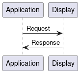
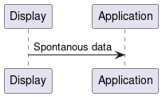

Serial Communication
General
The data exchange over the serial interface is mostly done in polling mode.

But in the DGUS Tool the controls can be configured to “Auto Upload”. If this feature is activated, the controls send there data directly to the display. Data which is send trough the “Auto Upload” feature is called “Spontanous Data” in the library.

Both types of data exchange is handled by the SerialCommunication class.
The communication over the serial interface is handled asynchronous by SerialCommunication
See description below.
Polling Communication
The SerialCommunication class handles the polling data transmission in the following non blocking way.
A Request is created
The Request contains 3 elements
get_request_data
This function object (callback) is called to retrieve the byte sequence which should be send to the display
response_callback
This function object (callback) is called, when the Response for the Request has been read.
name
defines a name for the request thats printed out in the log messages
The Request is added to the SerialCommunication Request Queue
The SerialCommunication class has a thread running which takes the Request from the Queue an processes it.
The byte sequence returned from the get_request_data function over send out trough the serial interface
SerialCommunication is reading the reponse data over the serial interface.
When the Reponse was read
response_callback is called with received response data.
Example:
def get_request_data() -> bytes:
request_to_send = [ 0x00, 0x01, 0x02]
return bytes(request_to_send)
def response_callback(response : bytes) -> None:
#response contains the complete response data
req = Request(
get_request_data=get_request_data,
response_callback=response_callback,
name="Dummy Request for documentation purposes"
)
com_interface = SerialCommunication(....)
com_interface.queue_request(req)
This handling make the Communication very versatile.
It can run completely asynchronous
The component (that creates the request) defines:
Which data should be send
And handles the response by itself
Please refer to Chaper 6 (Serial Communication Protocol) of the DGUS Application Development Guide
The Protocol class contains a few convenience functions for creating different types of messages.
Spontanous Transmission
Due the “Auto Upload” feature of a DGUS control, the display may send data over serial interface which was not requested before.
This data is allways in the “Read VPs (0x83)” format, which contains the address assigned in the DGUS Tool as “Variable Address”
To handle this kind of data transmission following a range of reserved address is defined.
This range is is by default for adresses from 0x0000 to 0x0FFF, so there are 4096 possible addresses which can be used for spontanous data.
The component which is interessed in the spontanous transmission, can register a callback for the address it is interessed in.
For each address multiple callbacks can be registered.
Example:
There are controls defined in DGUS Tool which use the “Variable Address” 0x0001 and 0x0002, and the component wants to get notfied when control has spontanously send (Auto Uploaded) it’s data.
def spontanous_data_for_address1_received(data : bytes) -> None:
#data contains the whole spontanous send byte sequence
def spontanous_data_for_address1_received2(data : bytes) -> None:
#data contains the whole spontanous send byte sequence
def spontanous_data_for_address2_received(data : bytes) -> None:
#data contains the whole spontanous send byte sequence
com_interface = SerialCommunication(...)
com_interface.register_spontaneous_callback(0x0001, spontanous_data_for_address1_received)
com_interface.register_spontaneous_callback(0x0002, spontanous_data_for_address1_received)
com_interface.register_spontaneous_callback(0x0002, spontanous_data_for_address2_received)